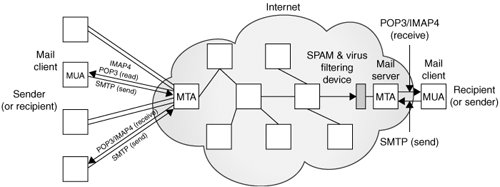

17.4. Electronic MailElectronic mail is both archaic and modern at the same time. For those of us who have been using the Internet since the early days, e-mail seems so "old," especially compared to newer and more immediate communication mechanisms such as Web-based online chat, instant messaging (IM), and digital telephony, i.e., Voice Over Internet Protocol (VOIP), applications. The next section gives a high-level overview of how e-mail works. If you are already familiar with this and just want to move on to developing e-mail-related clients in Python, skip to the succeeding sections. Before we take a look at the e-mail infrastructure, have you ever asked yourself what is the exact definition of an e-mail message? Well, according to RFC 2822, "[a] message consists of header fields (collectively called 'the header of the message') followed, optionally, by a body." When we think of e-mail as users, we immediately think of its contents, whether it be a real message or an unsolicited commercial advertisement (aka spam). However, the RFC states that the body itself is optional and that only the headers are required. Imagine that! 17.4.1. E-mail System Components and ProtocolsDespite what you may think, electronic mail (e-mail) actually existed before the modern Internet came around. It actually started as a simple message exchange between mainframe users ... note that there wasn't even any networking involved as they all used the same computer. Then when networking became a reality, it was possible for users on different hosts to exchange messages. This, of course, was a complicated concept as people used different computers, which used different networking protocols. It was not until the early 1980s that message exchange settled on a single de facto standard for moving e-mail around the Internet. Before we get into the details, let's first ask ourselves, how does e-mail work? How does a message get from sender to recipient across the vastness of all the computers accessible on the Internet? To put it simply, there are the originating computer (the sender's message departs from here) and the destination computer (recipient's mail server). The optimal solution is if the sending machine knows exactly how to reach the receiving host because then it can make a direct connection to deliver the message. However, this is usually not the case. The sending computer queries to find another intermediate host who can pass the message along its way to the final recipient host. Then that host searches for the next host who is another step closer to the destination. So in between the originating and final destination hosts are any number of machines called "hops." If you look carefully at the full e-mail headers of any message you receive, you will see a "passport" stamped with all the places your message bounced to before it finally reached you. To get a clearer picture, let's take a look at the components of the e-mail system. The foremost component is the message transport agent (MTA). This is a server process running on a mail exchange host which is responsible for the routing, queuing, and sending of e-mail. These represent all the hosts that an e-mail message bounces from beginning at the source host all the way to the final destination host and all hops in between. Thus they are "agents" of "message transport." In order for all this to work, MTAs need to know two things: 1) how to find out the next MTA to forward a message to, and 2) how to talk to another MTA. The first is solved by using a domain name service (DNS) lookup to find the MX (Mail eXchange) of the destination domain. This is not necessarily the final recipient, but rather, the next recipient who can eventually get the message to its final destination. Next, how do MTAs forward messages to other MTAs? 17.4.2. Sending E-mailIn order to send e-mail, your mail client must connect to an MTA, and the only language they understand is a communication protocol. The way MTAs communicate with one another is by using a message transport system (MTS). This protocol must be "known" by a pair of MTAs before they can communicate. As we described at the beginning of this section, such communication was dicey and unpredictable in the early days as there were so many different types of computer systems, each running different networking software. With the added complexity that computers were using both networked transmission as well as dial-up modem, delivery times were unpredictable. In fact, this author has had a message not show up until almost nine months after the message was originally sent! How is that for Internet speed? Out of this complexity rose the Simple Mail Transfer Protocol (SMTP) in 1982, one of the foundations of modern e-mail. SMTPSMTP was authored by the late Jonathan Postel (ISI) in RFC 821, published in August 1982. The protocol has since been updated in RFC 2821, published in April 2001. Some well-known MTAs that have implemented SMTP include: Open Source MTAs
Commercial MTAs
Note that while they have all implemented the minimum SMTP protocol requirements as specified in RFC 2821, most of them, especially the commercial MTAs, have added even more features to their servers, which goes above and beyond the protocol definition. SMTP is the MTS that is used by most of the MTAs on the Internet for message exchange. It is the protocol used by MTAs to transfer e-mail from (MTA) host to (MTA) host. When you send e-mail, you must connect to an outgoing SMTP server where your mail application acts as an SMTP client. Your SMTP server, therefore, is the first hop for your message. 17.4.3. Python and SMTPYes, there is an smtplib and an smtplib.SMTP class to instantiate. Review this familiar story:
As with NNTP, the login step is optional and only required if the server has SMTP authentication (SMTP-AUTH) enabled. SMTP-AUTH is defined in RFC 2554. And also like NNTP, speaking SMTP only requires communicating with one port on the server; this time, it's port 25. Here is some Python pseudocode to get started: from smtplib import SMTP n = SMTP('smtp.yourdomain.com') ... n.quit() Before we take a look at a real example, let's introduce some of the more popular methods of the smtplib.SMTP class. 17.4.4. smtplib.SMTP Class MethodsAs in the previous section outlining the smtplib.SMTP class methods, we won't show you all methods, just the ones you need in order to create an SMTP client application. For most e-mail sending applications, only two are required: sendmail() and quit(). All arguments to sendmail() should conform to RFC 2822, i.e., e-mail addresses must be properly formatted, and the message body should have appropriate leading headers and contain lines that must be delimited by carriage-return and NEWLINE \r\n pairs. Note that an actual message body is not required. According to RFC 2822, "[the] only required header fields are the origination date field and the originator address field(s)," i.e., "Date:" and "From:": (MAIL FROM, RCPT TO, DATA). There are a few more methods not described here, but they are not normally required to send an e-mail message. Please see the Python documentation for information on all the SMTP object methods.
17.4.5. Interactive SMTP ExampleOnce again, we present an interactive example: >>> from smtplib import SMTP as smtp >>> s = smtp('smtp.python.is.cool') >>> s.set_debuglevel(1) >>> s.sendmail('wesley@python.is.cool', ('wesley@python.is.cool', 'chun@python.is.cool'), ''' From: wesley@python.is.cool\r\nTo: wesley@python.is.cool, chun@python.is.cool\r\nSubject: test msg\r\n\r\nxxx\r\n.''') send: 'ehlo myMac.local\r\n' reply: '250-python.is.cool\r\n' reply: '250-7BIT\r\n' reply: '250-8BITMIME\r\n' reply: '250-AUTH CRAM-MD5 LOGIN PLAIN\r\n' reply: '250-DSN\r\n' reply: '250-EXPN\r\n' reply: '250-HELP\r\n' reply: '250-NOOP\r\n' reply: '250-PIPELINING\r\n' reply: '250-SIZE 15728640\r\n' reply: '250-STARTTLS\r\n' reply: '250-VERS V05.00c++\r\n' reply: '250 XMVP 2\r\n' reply: retcode (250); Msg: python.is.cool 7BIT 8BITMIME AUTH CRAM-MD5 LOGIN PLAIN DSN EXPN HELP NOOP PIPELINING SIZE 15728640 STARTTLS VERS V05.00c++ XMVP 2 send: 'mail FROM:<wesley@python.is.cool> size=108\r\n' reply: '250 ok\r\n' reply: retcode (250); Msg: ok send: 'rcpt TO:<wesley@python.is.cool>\r\n' reply: '250 ok\r\n' reply: retcode (250); Msg: ok send: 'data\r\n' reply: '354 ok\r\n' reply: retcode (354); Msg: ok data: (354, 'ok') send: 'From: wesley@python.is.cool\r\nTo: wesley@python.is.cool\r\nSubject: test msg\r\n\r\nxxx\r\n..\r\n.\r\n' reply: '250 ok ; id=2005122623583701300or7hhe\r\n' reply: retcode (250); Msg: ok ; id=2005122623583701300or7hhe data: (250, 'ok ; id=2005122623583701300or7hhe') {} >>> s.quit() send: 'quit\r\n' reply: '221 python.is.cool\r\n' reply: retcode (221); Msg: python.is.cool 17.4.6. Miscellaneous SMTPYou can read more about SMTP in the SMTP Protocol Definition/Specification (RFC 2821) at ftp://ftp.isi.edu/in-notes/rfc2821.txt as well as on the http://www.networksorcery.com/enp/protocol/smtp.htm Web page. To find out more about Python's SMTP support, you can start here: http://python.org/docs/current/lib/module-smtplib.html One of the more important aspects of e-mail which we have not discussed yet is how to properly format Internet addresses as well as e-mail messages themselves. This information is detailed in the Internet Message Format RFC, 2822, and can be downloaded at ftp://ftp.isi.edu/in-notes/rfc2822.txt. 17.4.7. Receiving E-mailBack in the day, communicating by e-mail on the Internet was relegated to university students, researchers, and employees of private industry and commercial corporations. Desktop computers were predominantly still Unix-based workstations. Home users just dialed-up on PCs and really didn't use e-mail. When the Internet began to explode in the mid-1990s, e-mail came home to everyone. Because it was not feasible for home users to have workstations in their dens running SMTP, a new type of system had to be devised to leave e-mail on an incoming mail host while periodically downloading mail for offline reading. Such a system consists of both a new application and a new protocol to communicate with the mail server. The application, which runs on a home computer, is called a mail user agent (MUA). An MUA will download mail from a server, perhaps automatically deleting it in the process (or not, leaving the mail on the server to be deleted manually by the user). However, an MUA must also be able to send mail ... in other words, it should also be able to speak SMTP to communicate directly to an MTA when sending mail. We have already seen this type of client, in the previous section when we looked at SMTP. How about downloading mail then? 17.4.8. POP and IMAPThe first protocol developed for downloading was the Post Office Protocol. As stated in the original RFC document, RFC 918 published in October 1984, "The intent of the Post Office Protocol (POP) is to allow a user's workstation to access mail from a mailbox server. It is expected that mail will be posted from the workstation to the mailbox server via the Simple Mail Transfer Protocol (SMTP)." The most recent version of POP is version 3, otherwise known as POP3. POP3, defined in RFC 1939, is still widely used today, and is the basis of our example client below. Another protocol came a few years after POP, known as the Interactive Mail Access Protocol, or IMAP. The first version was experimental, and it was not until version 2 that its RFC was published, RFC 1064 in July 1988. The current version of IMAP in use today is IMAP4rev1, and it, too, is widely used. In fact, Microsoft Exchange, one of the predominant mail servers in the world today, uses IMAP as its download mechanism. The IMAP4rev1 protocol definition is spelled out in RFC 3501, published in March 2003. The intent of IMAP is to provide a more complete solution to the problem; however, it is more complex than POP. Further discussion of IMAP is beyond the scope of the remainder of this chapter. We refer the interested reader to the aforementioned RFC documents. The diagram in Figure 17-3 illustrates this complex system we know simply as e-mail. Figure 17-3. E-Mail Senders and Recipients on the Internet. Clients download and send mail via their MUAs, which talk to their corresponding MTAs. E-Mail "hops" from MTA to MTA until it reaches the correct destination.17.4.9. Python and POP3No surprises here: import poplib and instantiate the poplib.POP3 class; the standard conversation is as expected:
And the expected Python pseudocode: from poplib import POP3 p = POP3('pop.python.is.cool') p.user(...) p.pass_(...) ... p.quit() Before we take a look at a real example, let's take a look at an interactive example as well as introduce the basic methods of the poplib.POP3 class. 17.4.10. Interactive POP3 ExampleHere is an interactive example of using Python's poplib: >>> from poplib import POP3 >>> p = POP3('pop.python.is.cool') >>> p.user('techNstuff4U') '+OK' >>> p.pass_('notMyPasswd') Traceback (most recent call last): File "<stdin>", line 1, in ? File "/usr/local/lib/python2.4/poplib.py", line 202, in pass_ return self._shortcmd('PASS %s' % pswd) File "/usr/local/lib/python2.4/poplib.py", line 165, in _shortcmd return self._getresp() File "/usr/local/lib/python2.4/poplib.py", line 141, in _getresp raise error_proto(resp) poplib.error_proto: -ERR directory status: BAD PASSWORD >>> p.user('techNstuff4U') '+OK' >>> p.pass_('youllNeverGuess') '+OK ready' >>> p.stat() (102, 2023455) >>> rsp, msg, siz = p.retr(102) >>> rsp, siz ('+OK', 480) >>> for eachLine in msg: ... print eachLine ... Date: Mon, 26 Dec 2005 23:58:38 +0000 (GMT) Received: from c-42-32-25-43.smtp.python.is.cool by python.is.cool (scmrch31) with ESMTP id <2005122623583701300or7hhe>; Mon, 26 Dec 2005 23:58:37 +0000 From: wesley@python.is.cool To: wesley@python.is.cool Subject: test msg xxx . >>> p.quit() '+OK python.is.cool' 17.4.11. poplib.POP3 Class MethodsThe POP3 class has numerous methods to help you download and manage your inbox offline. The most widely used ones are included in Table 17.4.
When logging in, the user() method not only sends the login name to the server, but it also awaits the reply indicating the server is waiting for user's password. If pass_() fails due to authentication issues, the exception raised is poplib.error_proto. If it is successful, it gets back a positive reply, e.g., '+OK ready', and the mailbox on the server is locked until quit() is called. For the list() method, the msg_list is of the form ['msgnum msgsiz',...] where msgnum and msgsiz are the message number and message sizes, respectively, of each message. There are a few other methods not listed here. For the full details, check out the documentation for poplib in the Python Library Reference. 17.4.12. Client Program SMTP and POP3 ExampleThe example below shows how to use both SMTP and POP3 to create a client that both receives and downloads e-mail as well as one that uploads and sends e-mail. What we are going to do is send an e-mail message to ourselves (or some test account) via SMTP, wait for a bitwe arbitrarily chose ten secondsand then use POP3 to download our message and assert that the messages are identical. Our operation will be a success if the program completes silently, meaning that there should be no output or any errors. Example 17.3. SMTP and POP3 Example (myMail.py)
Line-by-Line ExplanationLines 18This application starts with a few import statements and some constants, much like the other examples in this chapter. The constants here are the outgoing (SMTP) and incoming (POP3) mail servers. Lines 1014These lines represent the preparation of the message contents. We have some mail headers followed by three lines for the message body. The From and To headers represent the message sender and recipient(s). Line 14 puts everything together into a sendable message of headers followed by a message body, all delimited by the RFC 2822-required line delimiters with a blank line separating the two sections. Lines 1621We connect to the outgoing (SMTP) server and send our message. There is another pair of From and To addresses here. These are the "real" e-mail addresses, or the envelope sender and recipient(s). The recipient field should be an iterable. If a string is passed in, it will be transformed into a list of one element. For unsolicited spam e-mail, there is usually a discrepancy between the message headers and the envelope headers. The third argument to sendmail() is the e-mail message itself. Once it has returned, we log out of the SMTP server and check that no errors have occurred. Then we give the servers some time to send and receive the message. Lines 2330The final part of our application downloads the just-sent message and asserts that both it and the received messages are identical. A connection is made to the POP3 server with a username and password. After successful login, a stat() call is made to get a list of available messages. The first message is chosen ([0]), and retr() is told to download it. We look for the blank line separating the headers and message, discard the headers, and compare the original message body with the incoming message body. If they are identical, nothing is displayed and the program ends successfully. Otherwise, an assertion is made. Due to the numerous errors, we left out all the error-checking for this script so that it is easy on the eyes. One of the exercises at the end of the chapter is to add the error-checking. Now you have a very good idea of how sending and receiving e-mail works in today's environment. If you wish to continue exploring this realm of programming expertise, see the next section for other e-mail-related Python modules, which will prove valuable in application development. |